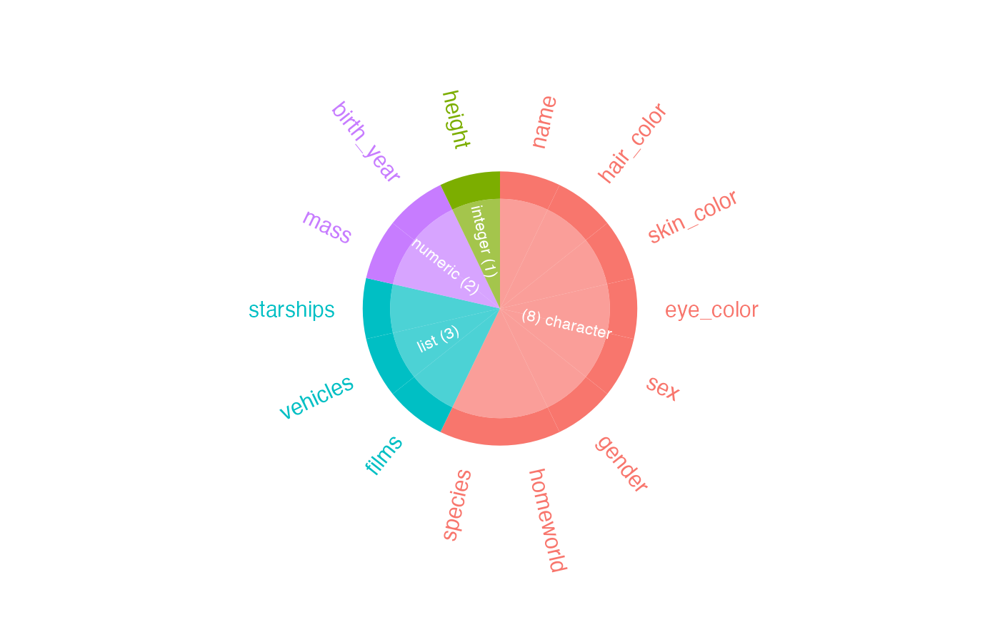
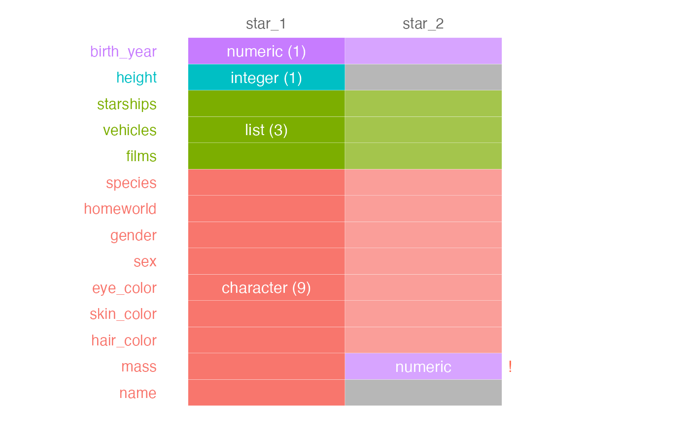

Exploring dataframe column types
Source:vignettes/pkgdown/inspect_types_examples.Rmd
inspect_types_examples.RmdIllustrative data: starwars
The examples below make use of the starwars from the
dplyr package.
## # A tibble: 6 × 14
## name height mass hair_color skin_color eye_color birth_year sex gender
## <chr> <int> <dbl> <chr> <chr> <chr> <dbl> <chr> <chr>
## 1 Luke Sky… 172 77 blond fair blue 19 male mascu…
## 2 C-3PO 167 75 NA gold yellow 112 none mascu…
## 3 R2-D2 96 32 NA white, bl… red 33 none mascu…
## 4 Darth Va… 202 136 none white yellow 41.9 male mascu…
## 5 Leia Org… 150 49 brown light brown 19 fema… femin…
## 6 Owen Lars 178 120 brown, gr… light blue 52 male mascu…
## # ℹ 5 more variables: homeworld <chr>, species <chr>, films <list>,
## # vehicles <list>, starships <list>
inspect_types() for a single dataframe
To explore the column types in a data frame, use the function
inspect_types(). The command returns a tibble
summarising the counts and percentages of columns with particular
types.
library(inspectdf)
# return tibble showing columns types
x <- inspect_types(starwars)
x## # A tibble: 4 × 4
## type cnt pcnt col_name
## <chr> <int> <dbl> <named list>
## 1 character 8 57.1 <chr [8]>
## 2 list 3 21.4 <chr [3]>
## 3 numeric 2 14.3 <chr [2]>
## 4 integer 1 7.14 <chr [1]>The names of columns with specific type can be accessed in the list
columns col_name, for example the list columns are found
using
x$col_name$list## 12 13 14
## "films" "vehicles" "starships"A radial visualisation of all columns and types is returned by the
show_plot() command:

inspect_types() for comparing two data frames
To illustrate the comparison of two data frames, we create two new
data frames by randomly sampling the rows of starwars,
dropping some of the columns and recoding the colums mass
to character. The results are assigned to the objects
star_1 and star_2:
# sample 50 rows from `starwars`
star_1 <- starwars %>% sample_n(50)
# recode the mass column to character
star_1$mass <- as.character(star_1$mass)
# sample 50 rows from `starwars` and drop the first two columns
star_2 <- starwars %>% sample_n(50) %>% select(-1, -2)When a second dataframe is provided, inspect_types()
returns a tibble that compares the column names and types found in each
of the input data frames. The columns cnt_1 and
cnt_2 contain the total number of columns with each type
found in the first and second inputs, respectively:
# compare the column types for star_1 and star_2
x <- inspect_types(star_1, star_2)
x## # A tibble: 4 × 6
## type equal cnt_1 cnt_2 columns issues
## <chr> <chr> <int> <int> <named list> <list>
## 1 character ✘ 9 7 <tibble [16 × 2]> <chr [2]>
## 2 list ✔ 3 3 <tibble [6 × 2]> <NULL>
## 3 integer ✘ 1 0 <tibble [1 × 2]> <chr [1]>
## 4 numeric ✘ 1 2 <tibble [3 × 2]> <chr [1]>columns is a named list column containing a list of
tibbles. Each tibble records the names of columns with each type. As an
example, all numeric column names is accessed using:
# tibble of numeric columns in star_1 or star_2
x$columns$numeric## # A tibble: 3 × 2
## col_name data_arg
## <chr> <chr>
## 1 birth_year star_1
## 2 mass star_2
## 3 birth_year star_2The issues column contains a list of character vectors
describing specific points of type or columns mismatch between the two
data frame inputs. The simplest way to view all of the issues is to use
the unnest() function from the tidyr
package:
library(tidyr)
# unnest the issue columns so we can see where the differences are between star_1 and star_2
x %>% select(type, issues) %>% unnest(issues)## # A tibble: 4 × 2
## type issues
## <chr> <chr>
## 1 character star_1::mass ~ character <!> star_2::mass ~ numeric
## 2 character star_1::name ~ character missing from star_2
## 3 integer star_1::height ~ integer missing from star_2
## 4 numeric star_1::mass ~ character <!> star_2::mass ~ numericFinally, we can produce a simple visualisation showing the
differences between star_1 and star_2 using
show_plot():
# print visualisation of column type comparison
inspect_types(star_1, star_2) %>% show_plot()